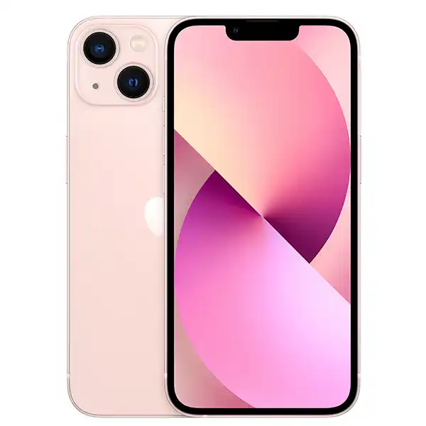

iPhone 16 adalah seri smartphone terbaru dari Apple, yang mencakup model iPhone 16, iPhone 16 Plus, iPhone 16 Pro, dan iPhone 16 Pro Max, serta iPhone 16e. iPhone 16 membawa peningkatan signifikan dibandingkan seri sebelumnya, termasuk chipset A18 yang lebih bertenaga, peningkatan kamera, dan layar Super Retina XDR yang lebih tajam. Seri ini juga menawarkan berbagai fitur baru dan peningkatan, seperti Apple Intelligence dan peningkatan daya tahan baterai.
IPHONE 15+
HANDPHONE, 22 APRIL 2025
RP 13.499.000
iPhone 15 memiliki layar 6,1 inci (155 mm) dengan teknologi Super Retina XDR OLED pada resolusi 2556×1179 piksel dan kerapatan piksel sekitar 460 PPI dengan kecepatan penyegaran 60 Hz .
IPHONE 14
HANDPHONE, 22 APRIL 2025
RP 11.499.000
Didukung oleh A15 Bionic dengan GPU 5-core
A15 Bionic menghadirkan performa tangguh sekelas profesional pada iPhone 14 dan iPhone 14 Plus. GPU 5-core memungkinkan kecepatan lebih tinggi untuk beban kerja berat dan grafis yang lebih halus untuk aplikasi video dan game berperforma tinggi.7 Mar 2023
IPHONE 13
HANDPHONE, 22 APRIL 2025

RP 8.499.000
Chip A15 Bionic pada iPhone 13 memastikan kinerja yang lancar dan responsif , menjadikannya pilihan yang andal untuk tugas sehari-hari dan aplikasi yang menuntut. Jika dibandingkan dengan iPhone 11 dan iPhone 12, iPhone 13 menawarkan kecepatan dan efisiensi yang lebih baik.
A15 Bionic menghadirkan performa tangguh sekelas profesional pada iPhone 14 dan iPhone 14 Plus. GPU 5-core memungkinkan kecepatan lebih tinggi untuk beban kerja berat dan grafis yang lebih halus untuk aplikasi video dan game berperforma tinggi.7 Mar 2023
IPHONE 12
HANDPHONE, 22 APRIL 2025
RP 6.749.000
Model iPhone ini adalah yang pertama yang mampu merekam video Dolby Vision 4K dengan rentang dinamis tinggi 10-bit hingga 30 fps yang memungkinkan kecerahan lebih tinggi dan bayangan lebih dalam. Kamera TrueDepth yang menghadap ke depan memiliki kamera 12 megapiksel dengan bukaan f/2.2.
Populer Post
IPHONE 6
IPHONE 7
IPHONE 8
Folllow me
follow akun instagram @muhamadsuwandi691 informasi tentang IPHONE dan lainnya, MUHAMADSUWANDI